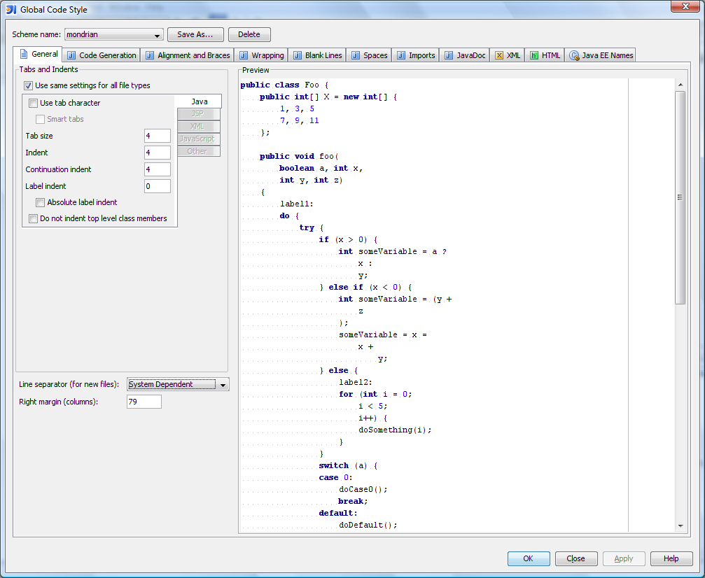
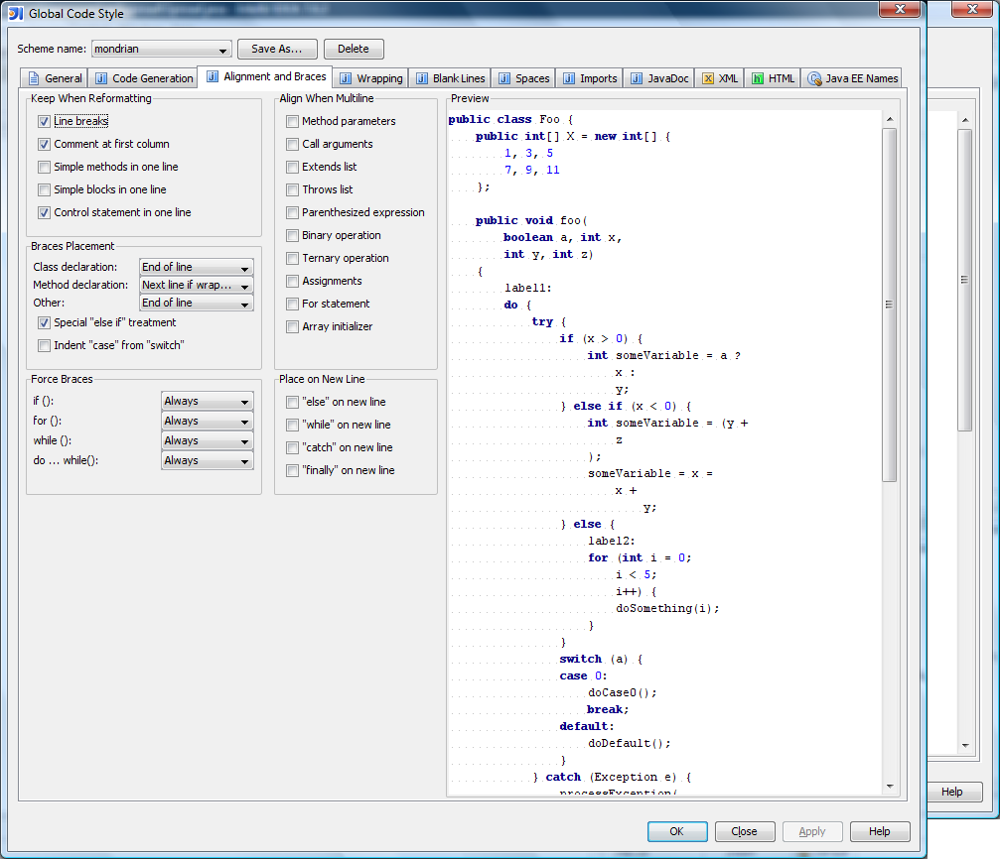
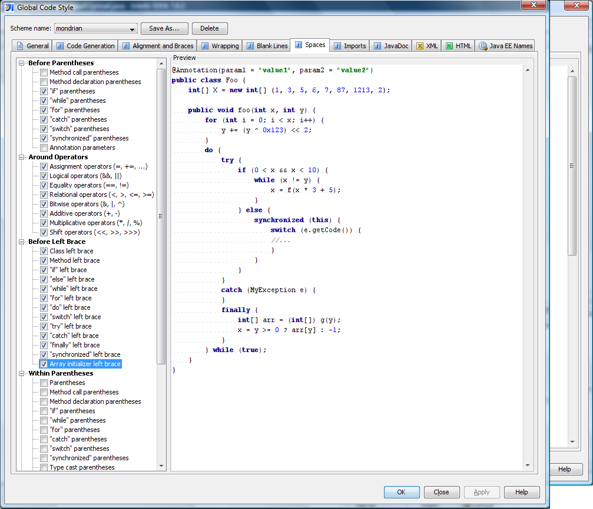

There are several ways to get Mondrian running. The easiest is to download a binary release, as described in the installation guide. But you can also build Mondrian from its source code. This document describes how to do that, how to learn about Mondrian's inner workings, and the guidelines you'll need to follow if you want to contribute to the Mondrian project.
First, you need to get a copy of the source code. You can get the source code from SourceForge or from the project's Github repository.
Download the latest mondrian-version.zip from
SourceForge, and unzip. Now find the mondrian-version-src.zip
inside this distribution, and unzip it. The directory you unzip this source code to —
typically something like C:\open\mondrian
or /usr/local/mondrian-x.y.z — will be denoted
${project.location} later in this document.
Download the Git client from Git.
Clone the Git repository.
$ git clone https://github.com/pentaho/mondrian.git
Cloning into 'mondrian'...
remote: Counting objects: 51661, done.
remote: Compressing objects: 100% (9979/9979), done.
remote: Total 51661 (delta 37833), reused 51512 (delta 37691)
Receiving objects: 100% (51661/51661), 294.25 MiB | 604 KiB/s, done.
Resolving deltas: 100% (37833/37833), done.
From the root of the mondrian project, launch ant to see the build instructions.
$ ant Buildfile: [path to mondrian]/build.xml help: [echo] [echo] You must specify a specific project target when using the ANT build. [echo] Targets are one of the following: [echo] [echo] - help [echo] This is the help. [echo] [echo] - info [echo] Shows configuration info. [echo] [echo] - binzip [echo] Compiles Mondrian and wraps everything in a neat little package, [echo] including documentation. [echo] [echo] - workbench-dist [echo] Compiles PSW and wraps everything in a neat little package. [echo] [echo] - jar [echo] Creates a Mondrian jar. [echo] [echo] - workbench [echo] Creates Mondrian and workbench jars. [echo] [echo] - clean [echo] Deletes build output. [echo] [echo] - clean-deep [echo] Clean build output and generated sources. [echo] [echo] - javadoc [echo] Create the API documentation. [echo] [echo] - test [echo] Runs the tests. Requires FoodMart to be installed. (see below) [echo] [echo] - jacoco [echo] Runs the tests with jacoco to measure coverage. Requires FoodMart [echo] to be installed. (see below) [echo] [echo] -load-foodmart [echo] Will load the test DB FoodMart using the JDBC parameters specified. [echo] (see below) [echo] [echo] To run the tests, you must have FoodMart available in a database. [echo] You can pass the DB configuration through the command line arguments, [echo] like so: [echo] [echo] ant -Dmondrian.foodmart.jdbcURL="jdbc:mysql://localhost/foodmart" \ [echo] -Dmondrian.foodmart.jdbcUser=foodmart \ [echo] -Dmondrian.foodmart.jdbcPassword=foodmart \ [echo] -Dmondrian.jdbcDrivers=com.mysql.jdbc.Driver \ [echo] -Ddriver.classpath="/opt/mysql-connector-java-5.1.25-bin.jar" [echo] test [echo] [echo] Alternatively, these can be written to a file at the root of the project. [echo] Create a file 'mondrian.properties' containing this: [echo] [echo] mondrian.foodmart.jdbcURL=jdbc:mysql://localhost/foodmart [echo] mondrian.foodmart.jdbcUser=foodmart [echo] mondrian.foodmart.jdbcPassword=foodmart [echo] mondrian.jdbcDrivers=com.mysql.jdbc.Driver [echo] driver.classpath=/opt/mysql-connector-java-5.1.25-bin.jar [echo] [echo] To load foodmart into your DB, you can call the 'load-foodmart' target [echo] before 'test'. [echo] [echo] The parameters can be adjusted to point to a different DB than MySQL. [echo] BUILD SUCCESSFUL Total time: 0 seconds
Before you run the regression test suite or the web application, you must install the standard FoodMart dataset.
There is a target in the build script, load-foodmart, that will load the Foodmart data into an empty database. You can use command line parameters, or create a file called mondrian.properties to tell mondrian how to connect to your database. See the ant help page above for details.
cd ${project.location}
ant -Dmondrian.foodmart.jdbcURL="jdbc:mysql://localhost/foodmart" \ -Dmondrian.foodmart.jdbcUser=foodmart \ -Dmondrian.foodmart.jdbcPassword=foodmart \ -Dmondrian.jdbcDrivers=com.mysql.jdbc.Driver \ -Ddriver.classpath="/opt/mysql-connector-java-5.1.25-bin.jar" load-foodmart Buildfile: /git/mondrian-master/build.xml info: [echo] ============================================================== [echo] | Mondrian configuration info | [echo] ============================================================== [echo] project.location = /git/mondrian-master [echo] jdk.home = ${env.JAVA_HOME} [echo] log4j.configuration = log4j.properties [echo] mondrian.foodmart.catalogURL = file:/git/mondrian-master/demo/FoodMart.xml [echo] mondrian.foodmart.jdbcURL = jdbc:mysql://localhost:3306/FOODMART [echo] mondrian.jdbcDrivers = com.mysql.jdbc.Driver [echo] driver.classpath (additions) = [echo] ============================================================== init: version: antcontrib.download-check: antcontrib.download: install-antcontrib: install-ivy: resolve: [echo] symlink=true [ivy:resolve] :: Apache Ivy 2.4.0 - 20141213170938 :: http://ant.apache.org/ivy/ :: [ivy:resolve] :: loading settings :: url = file:/git/mondrian-master/ivysettings.xml [ivy:resolve] :: resolving dependencies :: pentaho#mondrian;3.12-SNAPSHOT [ivy:resolve] confs: [codegen, default, sources, dist, oss-licenses, test] [ivy:resolve] found commons-collections#commons-collections;3.2.2 in pentaho-mvn [ivy:resolve] found commons-dbcp#commons-dbcp;1.2.1 in pentaho-mvn [ivy:resolve] found commons-pool#commons-pool;1.2 in pentaho-mvn [ivy:resolve] found xerces#xerces;2.0.2 in pentaho-mvn [ivy:resolve] found commons-lang#commons-lang;2.4 in pentaho-mvn [ivy:resolve] found commons-io#commons-io;1.4 in pentaho-mvn [ivy:resolve] found commons-logging#commons-logging;1.1.1 in pentaho-mvn [ivy:resolve] found commons-math#commons-math;1.1 in pentaho-mvn [ivy:resolve] found org.apache.commons#commons-vfs2;2.1-20150824 in pentaho-mvn [ivy:resolve] found javacup#javacup;10k in pentaho-mvn [ivy:resolve] found net.java.dev.javacc#javacc;5.0 in pentaho-mvn [ivy:resolve] found dom4j#dom4j;1.6.1 in pentaho-mvn [ivy:resolve] found javax.validation#validation-api;1.0.0.GA in pentaho-mvn [ivy:resolve] found eigenbase#eigenbase-xom;1.3.1 in pentaho-mvn [ivy:resolve] found eigenbase#eigenbase-properties;1.1.2 in pentaho-mvn [ivy:resolve] found eigenbase#eigenbase-resgen;1.3.1 in pentaho-mvn [ivy:resolve] found sun#jlfgr;1.0 in pentaho-mvn [ivy:resolve] found jakarta.servlet#jsp-api;2.0 in pentaho-mvn [ivy:resolve] found jakarta.servlet#servlet-api;2.4 in pentaho-mvn [ivy:resolve] found log4j#log4j;1.2.14 in pentaho-mvn [ivy:resolve] found org.olap4j#olap4j;1.2.0 in pentaho-mvn [ivy:resolve] found xalan#xalan;2.6.0 in pentaho-mvn [ivy:resolve] found xerces#xercesImpl;2.12.2 in pentaho-mvn [ivy:resolve] found pentaho#oss-licenses;6.1-SNAPSHOT in pentaho-mvn [ivy:resolve] found org.olap4j#olap4j-tck;1.0.1.539 in pentaho-mvn [ivy:resolve] found org.olap4j#olap4j-xmla;1.2.0 in pentaho-mvn [ivy:resolve] found junit#junit;3.8.1 in pentaho-mvn [ivy:resolve] found xmlunit#xmlunit;1.1 in pentaho-mvn [ivy:resolve] found monetdb#monetdb-jdbc;2.6 in pentaho-mvn [ivy:resolve] found org.mockito#mockito-all;1.9.5 in pentaho-mvn [ivy:resolve] found mysql#mysql-connector-java;5.1.25 in pentaho-mvn [ivy:resolve] :: resolution report :: resolve 18507ms :: artifacts dl 55ms [ivy:resolve] :: evicted modules: [ivy:resolve] commons-collections#commons-collections;2.1 by [commons-collections#commons-collections;3.2.2] in [default] [ivy:resolve] xerces#xercesImpl;2.9.1 by [xerces#xercesImpl;2.12.2] in [default] [ivy:resolve] commons-logging#commons-logging;1.0.3 by [commons-logging#commons-logging;1.1.1] in [default] [ivy:resolve] xerces#xercesImpl;2.9.1 by [xerces#xercesImpl;2.12.2] in [default] --------------------------------------------------------------------- | | modules || artifacts | | conf | number| search|dwnlded|evicted|| number|dwnlded| --------------------------------------------------------------------- | codegen | 0 | 0 | 0 | 0 || 0 | 0 | | default | 27 | 0 | 0 | 4 || 22 | 0 | | sources | 1 | 0 | 0 | 0 || 1 | 0 | | dist | 0 | 0 | 0 | 0 || 0 | 0 | | oss-licenses | 1 | 0 | 0 | 0 || 1 | 0 | | test | 7 | 2 | 0 | 0 || 7 | 0 | --------------------------------------------------------------------- [ivy:retrieve] :: retrieving :: pentaho#mondrian [ivy:retrieve] confs: [codegen, default, sources, dist, oss-licenses, test] [ivy:retrieve] 0 artifacts copied, 29 already retrieved (0kB/19ms) [ivy:retrieve] :: retrieving :: pentaho#mondrian [ivy:retrieve] confs: [codegen, default, sources, dist, oss-licenses, test] [ivy:retrieve] 0 artifacts copied, 1 already retrieved (0kB/12ms) prepare: define-tasks: parser: [javacup] Files are up to date. [javacc] Java Compiler Compiler Version 5.0 (Parser Generator) [javacc] (type "javacc" with no arguments for help) [javacc] Reading from file /git/mondrian-master/src/main/mondrian/parser/MdxParser.jj . . . [javacc] Note: UNICODE_INPUT option is specified. Please make sure you create the parser/lexer using a Reader with the correct character encoding. [javacc] File "TokenMgrError.java" is being rebuilt. [javacc] File "ParseException.java" is being rebuilt. [javacc] File "Token.java" is being rebuilt. [javacc] File "SimpleCharStream.java" is being rebuilt. [javacc] Parser generated successfully. generate.resources: [resgen] /git/mondrian-master/src/main/mondrian/resource/MondrianResource.java is up to date [resgen] /git/mondrian-master/build/classes/mondrian/resource/MondrianResource.properties is up to date [resgen] /git/mondrian-master/src/main/mondrian/resource/MondrianResource_en_US.java is up to date [resgen] /git/mondrian-master/build/classes/mondrian/resource/MondrianResource_en_US.properties is up to date [resgen] /git/mondrian-master/src/main/mondrian/resource/MondrianResource_de_DE.java is up to date [resgen] /git/mondrian-master/build/classes/mondrian/resource/MondrianResource_de_DE.properties is up to date [resgen] /git/mondrian-master/src/main/mondrian/resource/MondrianResource_de.java is up to date [resgen] /git/mondrian-master/build/classes/mondrian/resource/MondrianResource_de.properties is up to date [resgen] /git/mondrian-master/src/main/mondrian/resource/MondrianResource_es_ES.java is up to date [resgen] /git/mondrian-master/build/classes/mondrian/resource/MondrianResource_es_ES.properties is up to date generate.properties: [java] Generating src/main/mondrian/olap/MondrianProperties.java [java] Generating doc/properties.html [java] Generating mondrian.properties.template def: subfloor.compile.pre: compile.pre: compile.java: [echo] Compiling on JVM Version: 1.8.0_25-b17 [echo] include.gui=${include.gui} [javac] Compiling 10 source files to /git/mondrian-master/build/classes [javac] warning: [options] bootstrap class path not set in conjunction with -source 1.7 [javac] 1 warning [copy] Copying 1 file to /git/mondrian-master/build/classes [copy] Copying 1 file to /git/mondrian-master/build/classes compile.post: compile: clean-tests: junit.exists-check: [echo] junit.available=true init-tests: [mkdir] Created dir: /git/mondrian-master/test-src [mkdir] Created dir: /git/mondrian-master/build/test/classes subfloor.compile-tests: [javac] /git/mondrian-master/subfloor.xml:1778: warning: 'includeantruntime' was not set, defaulting to build.sysclasspath=last; set to false for repeatable builds [javac] Compiling 208 source files to /git/mondrian-master/build/testclasses [javac] warning: [options] bootstrap class path not set in conjunction with -source 1.7 [javac] Note: Some input files use or override a deprecated API. [javac] Note: Recompile with -Xlint:deprecation for details. [javac] Note: Some input files use unchecked or unsafe operations. [javac] Note: Recompile with -Xlint:unchecked for details. [javac] 1 warning [copy] Copying 78 files to /git/mondrian-master/build/testclasses set.connectString: compile-tests: load-foodmart: [echo] Driver present: true [java] 11:31:26,478 INFO [MondrianProperties] Mondrian: properties loaded from 'file=/git/mondrian-master/mondrian.properties (exists=true)' [java] 11:31:26,495 INFO [MondrianProperties] Mondrian: properties loaded from 'file:/git/mondrian-master/mondrian.properties' [java] 11:31:26,495 INFO [MondrianProperties] Mondrian: loaded 0 system properties [java] 11:31:26,542 WARN [MondrianFoodMartLoader] Starting load at: Fri Jan 22 11:31:26 EST 2016 [java] 11:31:26,542 INFO [MondrianFoodMartLoader] Parameters: [java] -tables [java] -data [java] -indexes [java] -jdbcDrivers=com.mysql.jdbc.Driver [java] -outputJdbcURL=jdbc:mysql://localhost:3306/FOODMART [java] -outputJdbcUser=foodmart [java] -outputJdbcPassword=foodmart [java] -outputJdbcSchema= [java] -outputJdbcBatchSize=50
Once you have the Foodmart dataset installed in your database, you can run the test suite. If you were using command line arguments to configure mondrian, make sure that the arguments are copied again here.
cd ${project.location}
ant -Dmondrian.foodmart.jdbcURL="jdbc:mysql://localhost/foodmart" \ -Dmondrian.foodmart.jdbcUser=foodmart \ -Dmondrian.foodmart.jdbcPassword=foodmart \ -Dmondrian.jdbcDrivers=com.mysql.jdbc.Driver \ -Ddriver.classpath="/opt/mysql-connector-java-5.1.25-bin.jar" test
If you don't have one already, you can create a free GitHub account here.
The first thing you need to do is fork the Pentaho repository into your GitHub account. This creates an exact copy of the Pentaho repo as it exists at the time of the fork in your personal GitHub space. This copy is not updated as the Pentaho repository gets updated, but we'll cover how to keep it updated later.
From the Mondrian repository page click the Fork button near the top right. Once you have done this, GitHub will redirect you to your newly forked repository.
Mondrian works on a single repository with multiple branches containing the different versions – past, released and in development. You should never be working against the master branch without permission from the Mondrian development team. Always work against the repository specific to the version you are developing for. Cloning the repository moves all the data and metadata from all branches to your local working folder, and you then checkout a specific branch locally to setup the file structure for that version.
First, clone the repository:
$ git clone https://github.com/[username]/mondrian.git
Cloning into 'mondrian'...
remote: Counting objects: 51661, done.
remote: Compressing objects: 100% (9979/9979), done.
remote: Total 51661 (delta 37833), reused 51512 (delta 37691)
Receiving objects: 100% (51661/51661), 294.25 MiB | 604 KiB/s, done.
Resolving deltas: 100% (37833/37833), done.
Now change into the newly created 'mondrian' folder and list the
available branches:
$ git branch -a
master
remotes/origin/3.0
remotes/origin/3.1
remotes/origin/3.2
remotes/origin/3.2.2
remotes/origin/3.3.1
remotes/origin/3.4
remotes/origin/HEAD -> origin/master
remotes/origin/lagunitas
remotes/origin/master
remotes/origin/pacino
And finally checkout the branch you want to work on:
$ git checkout 3.4
Branch 3.4 set up to track remote branch 3.4 from origin.
Switched to a new branch '3.4'
In order to be able to keep your repository up-to-date with the Pentaho Mondrian repository, and to be able to merge your changes with changes made while you were developing your feature, we will add a new remote called 'upstream' that will point to the Pentaho repository directly.
$ git remote add upstream git://github.com/pentaho/mondrian.gitYou also want to disable fast-forward during merges to preserve the entire commit history and properly track file changes.
$ git config --add merge.ff falseNote: If you have a git version prior to 1.7.6, this option will do nothing.
Your repository is now ready to develop against your selected branch.
It is important during development that you keep your repository updated with any changes made to the Pentaho Mondrian repository. This not only ensures that you are always working with the most recent code available for your working branch, but also ensures that your changes do not break any new or updated tests.
To update and merge changes from the upstream repository, do the following:
$ git fetch upstream [branch]
$ git merge upstream/[branch]Where [branch] is the current branch you're working on.
If you are using a version of git prior to 1.7.6, you need to add the
––no–ff flag in order to disable fast–forward merges:
$ git merge --no-ff upstream/[branch]
If there are any merge conflicts, git will let you know. Otherwise, your local repository is now up-to-date without losing any of your working changes.
This should always be the 2nd last step performed before issuing a pull request. The last step being, of course, running the tests again after the merge to ensure nothing is broken.
Before starting a pull request, please make sure the following criteria are met or your request may not be accepted and merged, or may take much longer to be merged into the Pentaho Mondrian repository.
A pull request is the way GitHub manages the process of merging changes between forked repositories. Generating a pull request starts a conversation with the Pentaho Mondrian development team asking them to review the changes you've made, comment on them, and optionally choose to merge the changes into the main repository or return them to you for additional changes.
When you are ready to start a pull request, go to your personal Mondrian
fork on GitHub and select the branch you want to be merged. Then click the
Pull Request button near the top of the page.
You can then fill in a title and notes related to the pull request, and click the Send pull request button. The Mondrian development team will be notified of the pull request and will continue the process from there.
For a more detailed description of the entire pull request and commenting process, see Help.GitHub – Send pull requests
If you are contributing code, please follow the same guidelines used for the rest of the code. ("When in Rome, do as the Romans do.")
Code content:
Documentation and comments:
Spacing and indentation:
The following images show my code style settings in IntelliJ. If you use IntelliJ, plug in these settings; if not, they should give you an idea of the code formatting policy.



If the files you are submitting do not pass the checkFile utility, your pull
request may be delayed or denied. It is recommended that you run checkFile
locally before initiating a pull request. The utility is located in your git
repository under the bin directory.
https://github.com/pentaho/mondrian/tree/master/bin/checkFile
The script requires cygwin to run on
Windows.
Usage:
checkFile [ <options> ] <file>...
Checks a list of files.
checkFile [ <options> ] --opened
Checks all files that are opened in git. Implies --strict.
checkFile [ <options> ] --under <dir>
Recursively checks all files under a given directory.
checkFile --help
Prints this help.
Options:
--lenient
Does not apply rules to components which are not known to
be in compliance.
--strict
Stricter than usual; the opposite of lenient.
If you're feeling mystified where the various SQL statements come from, here's a good way to learn more. Give it a try, and if you have more questions I'll be glad to answer them.
In a debugger, put a break point in the
RolapUtil.executeQuery()
method, and run a
simple query. The easiest way to run a query is to run a junit testcase such as
BasicQueryTest.testSample0().
The debugger will stop every time a SQL
statement is executed, and you should be able to loop up the call stack to which component is executing the query.
I expect that you will see the following phases in the execution:
schema.xml file is read
(validating calculated members and named sets, resolving default members of
hierarchies, and such)[Store].[USA].[CA], it will
look all members of the [Store Nation] level, then look up all children
of the [USA] member.)
[Product].children are evaluated.
Remember that the purpose of these queries is to populate cache. There are two caches. The dimension cache which maps a member to its children, e.g.
[Store].[All Stores]→{ [Store].[USA], [Store].[Canada], [Store].[Mexico]}
The aggregation cache maps a tuple a measure value, e.g.
([Store].[USA], [Gender].[F], [Measures].[Unit Sales])→123,456
Once the cache has been populated, the query won't be executed again. That's why I recommend that you restart the process each time you run this in the debugger.
Author: Julian Hyde; last updated August, 2011.
Version: $Id$
(log )
Copyright (C) 2005-2011 Pentaho